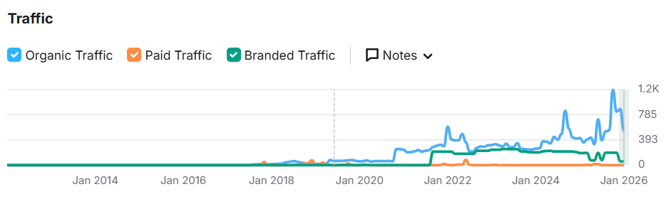
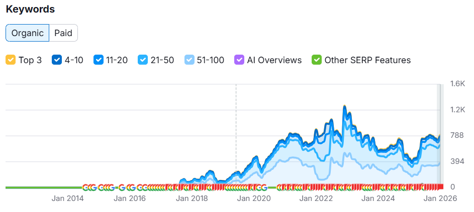
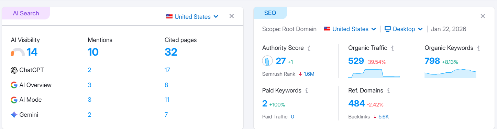
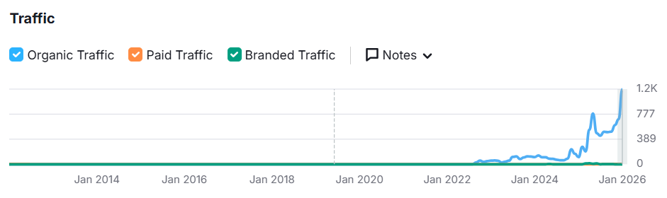
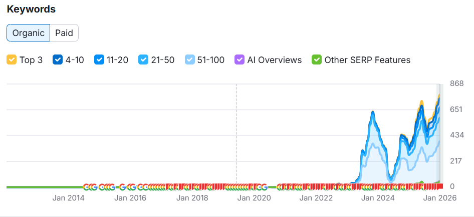
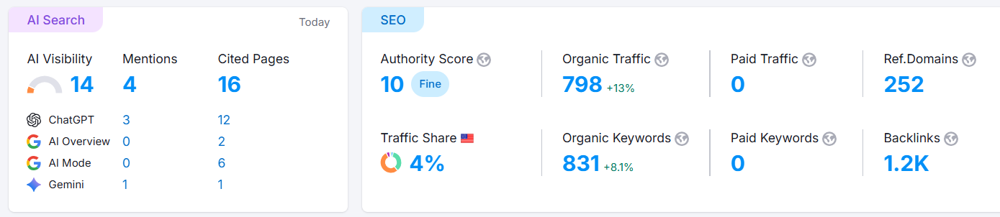
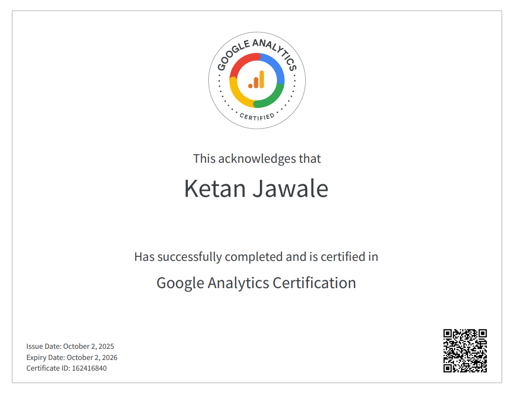
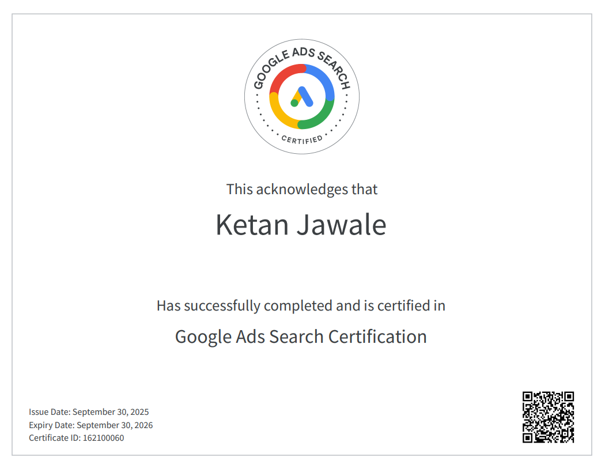
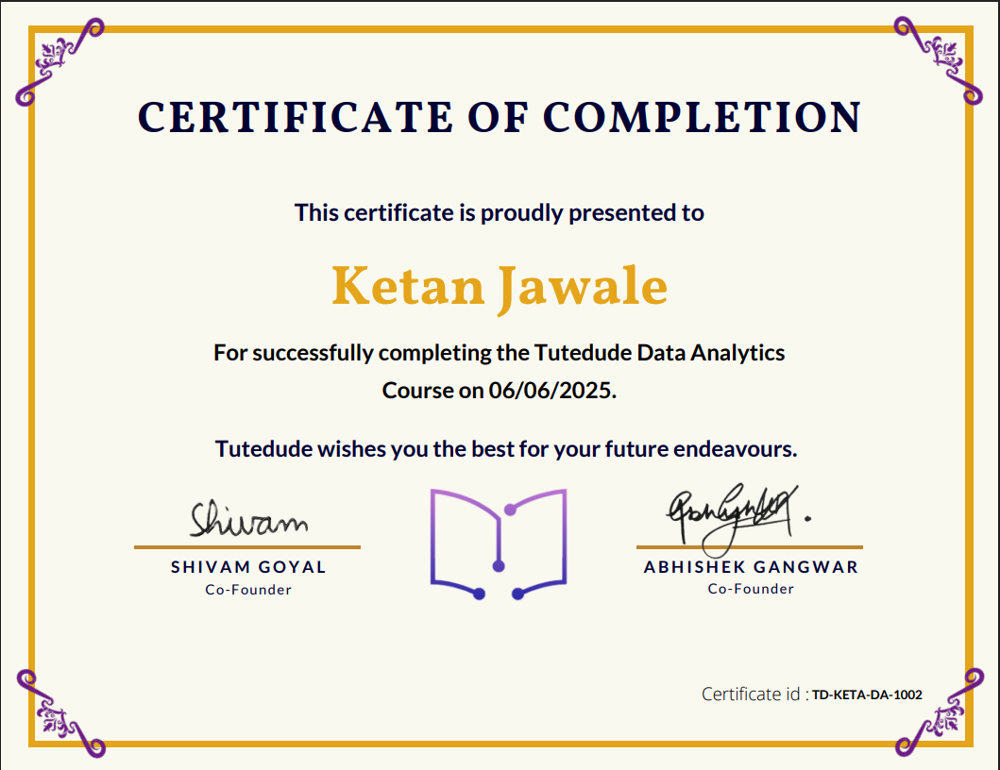

Hello, I'm
10+ Years Driving Organic Growth & Search Visibility for SaaS & eCommerce Brands
Data-driven Senior SEO & Analytics Lead with 10+ years of experience accelerating organic growth, ranking high-intent keywords, and developing revenue-centered SEO strategies for SaaS, eCommerce, and enterprise brands.
Specialized in technical SEO, content strategy, keyword intelligence, competitor analysis, and analytics visualization. Proven track record of transforming stagnant websites into high-performing organic assets using SEMrush, GA4, advanced keyword mapping, and AI-powered SEO tools.
Strong ability to translate data into business decisions and lead end-to-end SEO roadmaps that align with product strategy and revenue goals.
Organic traffic growth for Work365apps.com through complete SEO restructuring
Monthly organic sessions for Jayssmokeshop.com from almost zero
Keywords ranked across SaaS, cloud services, and retail niches
Top 3 keyword positions achieved across multiple industries
AGR Technologies
Retail and Service Industry Clients
IOTAP Inc.
SaaS Product and Enterprise SEO
Aimax Provider
This case study outlines the organic growth strategy for Work 365, a leading subscription management and billing automation solution for Microsoft Partners. By focusing on high-intent keyword acquisition and modernizing the site for AI-driven search, we achieved significant gains in keyword footprint and established a strong presence in AI-generated search results.
The B2B SaaS space—specifically the Microsoft Partner ecosystem—is highly competitive. The primary challenges included:
Instead of targeting high-volume generic terms, we focused on Long-Tail Intent.
With the rise of AI Overviews (SGE) and LLMs, we optimized content for Generative Engine Optimization (GEO).

Traffic & Brand Authority: Massive spike in organic traffic in late 2025, with sustained higher baseline showing strong market recognition.

Keyword Growth Trend: Consistent upward trajectory from 2014-2026, with significant surge beginning in 2021 during aggressive content marketing push.

Comprehensive Analytics: Full SEMRush performance metrics showing keyword distribution, traffic trends, and competitive positioning.
| Metric | Outcome | Impact |
|---|---|---|
| Organic Keywords | 798 | Expanded reach into top-of-funnel queries. |
| AI Mentions | 10 | Established the brand as a "source of truth" for AI bots. |
| Authority Score | 27 | Improved ability to rank for competitive industry terms. |
By blending traditional SEO (keyword research and backlinking) with forward-looking strategies (AI Search Optimization), we transformed work365apps.com into a high-authority domain. The site is now positioned not just as a search result, but as a cited authority for the next generation of AI-driven search.
This case study details the organic search transformation for Jay's Smoke Shop. By moving from virtually zero search presence to a dominant position in early 2026, the strategy successfully captured high-intent retail traffic and secured significant citations within AI-driven search engines.
Jay's Smoke Shop faced several industry-specific hurdles:
We transitioned the site from ranking for zero terms to a diverse portfolio of 831 organic keywords.
As search shifted toward AI, we optimized the site to become a cited authority for LLMs like ChatGPT and Gemini.
To compete in a "YMYL" (Your Money Your Life) adjacent niche, we focused on building a clean, authoritative backlink profile.

The "Hockey Stick" Traffic Surge: The organic traffic graph shows a definitive breakthrough point in late 2024. Following a period of testing and indexing, the site experienced exponential growth throughout 2025, culminating in a peak of nearly 1.2K monthly visits by January 2026.

Keyword Portfolio Diversification: The keyword trend highlights a move from zero visibility to a robust distribution across all ranking tiers. Notably, the number of keywords in the Top 3 and 4-10 positions saw a massive increase in the final quarter of 2025, directly correlating with the traffic spike.

Complete SEMRush Analysis: Comprehensive performance metrics showcasing keyword rankings, traffic trends, authority score progression, and competitive positioning in the retail niche.
| Achievement | Details | Significance |
|---|---|---|
| Zero-to-Hero Growth | 0 to 800+ visits | Successfully scaled organic traffic in under 24 months. |
| Pure Organic Efficiency | $0 paid advertising | Achieved all results through organic strategies alone. |
| Future-Proofing | 14% AI visibility | Ensuring brand relevance as users shift to AI chat interfaces. |
This transformation demonstrates that even in highly regulated, competitive niches, a focused organic strategy can deliver exceptional results. By combining traditional SEO tactics with cutting-edge AI optimization, Jay's Smoke Shop went from invisible to influential in the retail space, proving that organic growth remains the most sustainable path to digital success.

Advanced Web Analytics & GA4

Search, Display & Measurement

Professional Data Insights
Let's discuss how I can help accelerate your organic growth
Dombivli (W), Thane
University of Mumbai
University of Mumbai